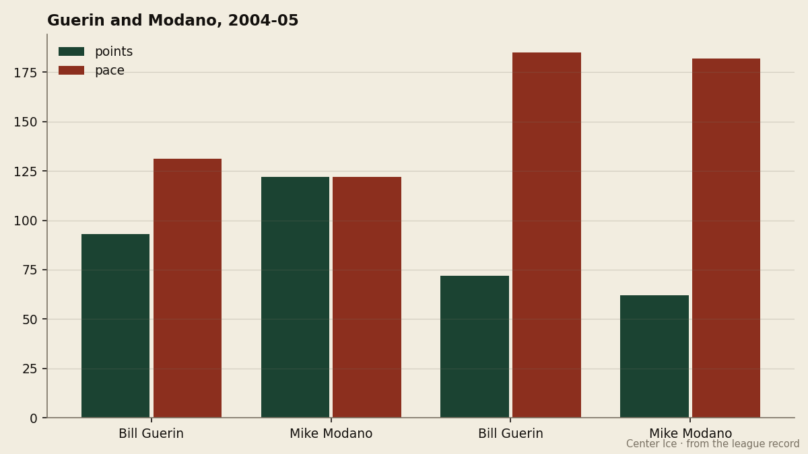

COL
COL WSH
WSHScoring Race: two men at 34, both at 180, on a team that has not lost in 10
Bill Guerin and Mike Modano are the league's only pair of 180-plus-pace scorers, and they share a dressing room in Dallas.
 Howard BlaineSenior writer, The Blaine Rankings · The Hockey Gazette
Howard BlaineSenior writer, The Blaine Rankings · The Hockey GazetteGuerin has 72 points in 32 games, a 184-point pace. Modano has 62 in 28, a 182-point pace. Both are 34 years old. Both play for  Dallas Stars. The club has won 10 straight, and the two men who account for 134 of its 143 goals are doing it on a body that most scouts would have written off two years ago.
Dallas Stars. The club has won 10 straight, and the two men who account for 134 of its 143 goals are doing it on a body that most scouts would have written off two years ago.

| Player | Club | GP | G | A | Pts | Pace | MPG |
|---|---|---|---|---|---|---|---|
| Bill Guerin | DAL | 32 | 36 | 36 | 72 | 184 | 20.3 |
 Peter Forsberg95 Peter Forsberg95 | COL | 30 | 30 | 36 | 66 | 180 | 20.4 |
 Jaromir Jagr91 Jaromir Jagr91 | WSH | 31 | 27 | 36 | 63 | 167 | 22.6 |
 Milan Hejduk88 Milan Hejduk88 | COL | 30 | 25 | 38 | 63 | 172 | 20.8 |
 Mike Modano88 Mike Modano88 | DAL | 28 | 23 | 39 | 62 | 182 | 21.0 |
The gap between Guerin and the rest of the league is 4 points on pace. No other club has two men at 180. The closest is Colorado, with Forsberg at 180 and Hejduk at 172, but 172 is 8 points below Guerin's mark and 10 below Modano's. Dallas is the only team in the league where the first and fifth men in points are both above 180.
Last year told a different story
The 2003-04 season was a different document. Guerin played 58 games and had 93 points, a 131-point pace. Modano played all 82 and had 122, a 122-point pace. Both were good, and both were below their current marks by a wide margin. Guerin is up 53 points on pace from last year. Modano is up 60. That is not a small adjustment for men in their 34th season.
Guerin's 2003-04 was cut short, 58 games where he would normally play 80. This year he has played 32 and is already at 72, which puts him 21 points ahead of his 2003-04 total at the same game mark. Modano's 28 games and 62 points are also ahead of his 2003-04 pace, though by a smaller margin. The difference is that Guerin's body has come back from a shortened season, and Modano's has not had the same disruption.
The contract question is not urgent
Guerin is on a 5-year deal signed after his 41-goal season in 2001-02, with 3 years left at $8.80M. Modano is under a similar long-term structure. The cost per point for Dallas as a club is $1.49M, the third cheapest among the top five. A player who produces 72 points in 32 games at $8.80M is a player who is paying for himself many times over. The question is not whether the contract is fair. The question is whether the body can hold the pace for 50 more games.
Guerin was drafted fifth overall by  New Jersey Devils in 1989 and won a Cup there in 1995. He was traded to Edmonton, then to his hometown of Boston, then to Dallas. He is 34, 15 years after that draft, and playing the best hockey of his career in the city that gave him the contract. The Bureau's Book has him at 89 overall, which is 1 below his base grade. The Development Index has him below his base, which is the expected state for a 34-year-old. The morale is 95, which is the number that matters more than the grade.
New Jersey Devils in 1989 and won a Cup there in 1995. He was traded to Edmonton, then to his hometown of Boston, then to Dallas. He is 34, 15 years after that draft, and playing the best hockey of his career in the city that gave him the contract. The Bureau's Book has him at 89 overall, which is 1 below his base grade. The Development Index has him below his base, which is the expected state for a 34-year-old. The morale is 95, which is the number that matters more than the grade.
Both men play over 20 minutes a night, Modano at 21.0 and Guerin at 20.3, which is the threshold where a veteran's effectiveness starts to separate from a veteran's volume. The 10-game win streak gives the coaching staff room to manage those minutes, and the 143 goals for in 32 games means the team does not need either man to carry the load alone.
The scoring race is a three-man race between Guerin, Forsberg, and Modano, with a 4-point gap on pace. The race will not be decided in December. But the two men in Dallas are the only pair in the league who can win it by staying healthy, and the 10-game streak is the best evidence that the room around them is taking care of the work that would otherwise fall on their shoulders.
The standings at Christmas are the standings in April. For Dallas, the Christmas standings are 45 points and 10 straight wins. The April question is whether 34 is 34 for the whole season, or whether it is 34 for the first half and something else for the second. The numbers say the first half. The body will say the rest.